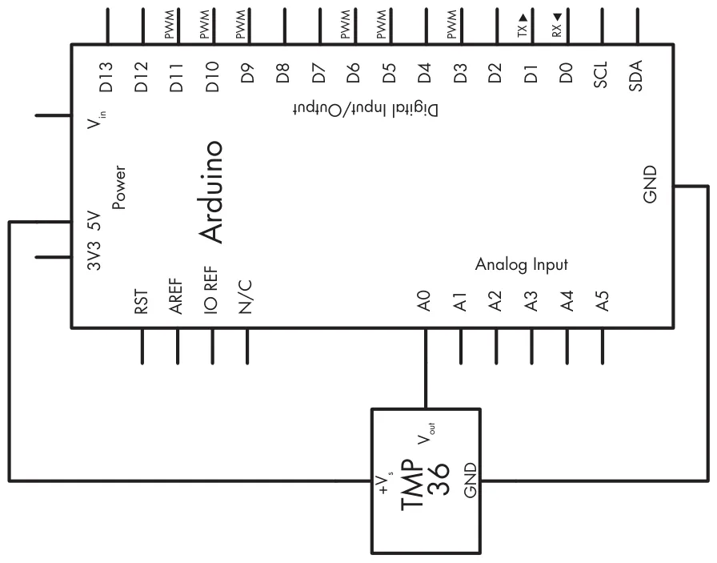

Blinks the Temperature
Now that you know how to create custom functions, we’ll make a quick-read thermometer using the TMP36 temperature sensor from Chapter 4 and the Arduino’s built-in LED. If the temperature is below 20 degrees Celsius, the LED will blink twice and then pause; if the temperature falls between 20 and 26 degrees, the LED will blink four times and then pause; and if the temperature is above 26 degrees, the LED will blink six times.
We’ll make our sketch more modular by breaking it up into distinct functions that will make the sketch easier to follow, and the functions will be reusable. Our thermometer will perform two main tasks: measure and categorize the temperature, and blink the LED a certain number of times (determined by the temperature).
The Hardware
The required hardware is minimal:
- One TMP36 temperature sensor
- One breadboard
- Various connecting wires
- Arduino and USB cable
The Schematic
The circuit is very simple, as shown in Figure 5-1.

The Sketch
We’ll need to create two functions for the sketch. The first one will read the value from the TMP36, convert it to Celsius, and then return a value of 2, 4, or 6, corresponding to the number of times the LED should blink. We’ll alter the sketch from Project 8 for this purpose.
For our second function, we’ll use blinkLed() from Project 9. Our void loop will call the functions in order and then pause for 2 seconds before restarting.
For the sketch, enter this code into the IDE:
// Project 11 - Creating a Quick-Read Thermometer That Blinks the Temperature
#define LED 13
int blinks = 0;
void setup()
{
pinMode(LED, OUTPUT);
}
int checkTemp()
{
float voltage = 0;
float celsius = 0;
float hotTemp = 26;
float coldTemp = 20;
float sensor = 0;
int result;
// read the temperature sensor and convert the result to degrees Celsius
sensor = analogRead(0);
voltage = (sensor * 5000) / 1024; // convert raw sensor value to millivolts
voltage = voltage - 500; // remove voltage offset
celsius = voltage / 10; // convert millivolts to Celsius
// act on temperature range
if (celsius < coldTemp)
{
result = 2;
}
else if (celsius >= coldTemp && celsius <= hotTemp)
{
result = 4;
}
else
{
result = 6; // (celsius > hotTemp)
}
return result;
}
void blinkLED(int cycles, int del)
{
for ( int z = 0 ; z < cycles ; z++ )
{
digitalWrite(LED, HIGH);
delay(del);
digitalWrite(LED, LOW);
delay(del);
}
}
void loop()
{
blinks = checkTemp();
blinkLED(blinks, 500);
delay(2000);
}Because we use custom functions, all we have to do in void_loop() is call them and set the delay. The function checkTemp() returns a value to the integer variable blinks, and then blinkLED() will blink the LED blinks times with a delay of 500 milliseconds. The sketch then pauses for 2 seconds before repeating.
Upload the sketch and watch the LED to see this thermometer in action. (Be sure to keep this circuit assembled, since we’ll use it in the following examples.)